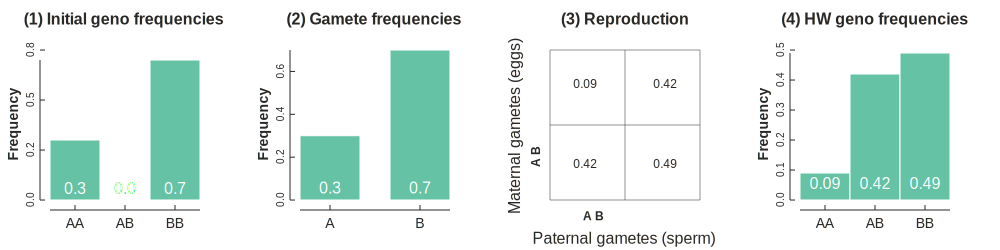
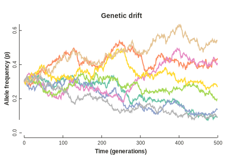

Modeling evolution: idealized populations¶
Under Construction¶
Learning objectives¶
By the end of this lesson you will:
- Know the assumptions that underlie an 'idealized population'.
- Understand the concept of Hardy-Weinberg equilibrium.
Genetic variation¶
Consider a population that has variation at a single gene (A) in the form of two alleles (A1 and A2) which differ by a single mutation. We may be interested in the frequency of the two alleles in this population; how much more frequent does one occur relative to the other? If we assume our diploid population is of size N, then there are 2N gene copies, every one of which exists as either an A1 or A2 allele. How can we best measure the genetic diversity of this population? How many samples do we need? And what can we learn about a population by measuring its genetic diversity at a single gene? These types of questions are typically considered to be within the discipline of population genetics, a field that has traditionally been treated as distinct from phylogenetics. However, as we will see, developments in recent decades have significantly bridged a gap between these fields. Major questions in both disciplines, such as predicting changes in allele frequencies, or estimating divergence times between species, can both be modeled as an outcome of genealogical (tree-based) processes.
The term allele above refers to the state of information in a gene copy, i.e., its haplotype, which arose as a consequence of mutations throughout its genealogical history. So far, we have considered only two alleles in this population. If a new mutation were to arise at a single copy of this gene, then we could also consider a third allele, such as A3; but for simplicity, we will assume for now that only two alleles exist in the population. In fact, these types of simplifying assumptions are the topic of this lesson.
Genetic variation and genealogies¶
Throughout this chapter we will reinforce a clear distinction between relatedness of gene copies, which is a reflection of their usually unobservable genealogical relationships, versus the identity of gene copies, such as their allelic state, which is an observable/measurable character that arose as a consequence of mutations occurring throughout their genealogical history.
Our example above is a clear case of this distinction. All 2N gene copies share a genealogy in which some are more closely related to others, however, because there is only a single mutation in the population, there is at most enough information to group these gene copies into two groups, and certainly not enough information to infer their full genealogy.
Simulate and plot a genealogy and SNP
import ipcoal
# simulate a coalescent genealogy with a single SNP
mod = ipcoal.Model(Ne=1000, nsamples=10)
mod.sim_snps(1)
mod.draw_genealogy(); # toytree.utils.tree_sequence().draw_tree(idx=0);
Drawing of a genealogy with a single mutation.
Population genetics¶
Let's return to our example of genetic variation in a population. A primary goal of population genetics is to develop models of evolution within populations that can be used to predict changes in allele frequencies over time. Such models can be discrete or continuous in time, and can include parameters to describe how individuals live, die, reproduce, and interact with each other and their environment. However, as we will see, there is a benefit to constructing simple mathematical models to describe evolution in populations, models that include as few of processes and parameters as possible, while still being informative.
In many cases, these simple models can be incredibly powerful for describing evolution. Here we will focus on two genealogical models of evolution within populations, the Wright-Fisher (WF) process, and the Coalescent. The latter is a mathematical approximation of the former, and so we will first focus on the WF process.
Idealized populations¶
Amazingly, much of the foundational work in population genetics was developed before we even knew about DNA, and involved primarily developing statistical models that could convert verbal descriptions of evolution occurring in populations into probability statements. An important basis for this was the application of Mendel's theory of particulate (non-blending) inheritance to describe gene copies as discrete units that are passed from generation to generation, where the probability that particular gene copies occur more or less in the next generation is a manifestation of allele frequencies changing over time.
To formalize this process into a probabilistic model we need to make some assumptions about populations. An idealized population refers to a theoretical population that meets a particular set of unrealistic but useful assumptions. Most notably, that it is infinite in size, that it has discrete non-overlapping generations, and that the individuals within it are randomly mating. As we will see, these and other assumptions can be relaxed to allow for further insights into their effect on the model. Overall, the purpose of these population genetic models is to understand how and why allele frequencies (i.e., the relative abundance of A1 versus A2) change over time.
Hardy-Weinberg Expectation¶
The Hardy-Weinberg equilibrium is a statement that the frequencies of alleles (variants at a gene) and genotypes (combinations of alleles within diploid individuals at a gene) will remain constant through time in an idealized population in the absence of selection, mutation, migration, and genetic drift.
This is not actually a super surprising statement in terms of statistics, but more so in terms of evolution. It is identifying that these processes are fundamental to explaining why allele frequencies change over time, and also, that the process of segregation of alleles during Meiosis (i.e., Mendelian Inheritance) is not expected to change allele frequencies on its own. The concept of Hardy Weinberg equilibrium is demonstrated in the figure below: (1) given some starting genotype frequencies; (2) we can predict the frequency of their gametes by assuming equal fitness among genotypes; (3) we can then also predict the probability of formation of new diploids by assuming random mating of gametes; (4) which leads to a new population of diploids at new genotype frequencies.

Computing HW¶
In the first cell of the figure above the population is initially not in Hardy-Weinberg equilibrium. We can tell this by looking at the genotype frequencies; there appears to be a deficit of heterozygotes compared to what you would expect if the population were randomly mating. But what is the null expectation for the number of heterozygotes that should exist? Well, this is something that Hardy-Weinberg can tell us. A population is expected to reach HW equilibrium after just a single generation, no matter what its starting allele frequencies are, if it meets the assumptions of an idealized population (i.e., infinite in size and randomly mating).
More specifically, after a single generation the genotype frequencies (e.g., A1A1, A1A2, and A2A2) will reach HW equilibrium, despite the fact that allele frequencies (e.g., A1 and A2) do not change. In other words, the only thing that is changing is the way in which gene copies are grouped together into diploids.
This expectation can be computed exactly using probability statements implemented in Python. Below we will compute the frequencies for each step in the figure above. (We will use the same genotype frequencies but change the allele names to A and B, rather than A1 and A2 to make it easier to read).
import numpy as np
import toyplot
AA = 0.3
AB = 0.0
BB = 0.7
The genotype frequencies of the three possible genotypes are initially 0.3, 0.0, and 0.7. Each AA parent has two A alleles, each AB parent has one A and one B allele, and each BB parent has two B alleles. We describe the genotypes in terms of frequencies, as opposed to total numbers, since the population is infinite in size.
Based on these frequencies we can calculate the relative frequency of A and B haploid gametes that will be produced by these diploids. We can label these frequencies \(p\) and \(q\), where \(p\) is computed as the sum of the frequency of AA homozygotes plus ½ the frequency of AB heterozygotes; \(q\) is computed as the sum of the frequency of BB homozygotes plus ½ the frequency of AB heterozygoes.
p = AA + (AB / 2)
q = BB + (AB / 2)
print(p, q)
# 0.3 0.7
You might ask, but what if some of the diploids produced more alleles than others? Well, for that to happen would be a manifestation of either drift or selection, both of which we are assuming to be absent from this model. This is key to remember.
Now that we know the frequency of alleles in the gametes we can calculate the frequency of genotypes formed in the next generation by assuming that populations are randomly mating. AA genotypes are formed by the joining of two A gametes, heterozygotes by an A and B gamete, and BB genotypes by the joining of two B gametes. So the probability of AA individuals is the probability of sampling \(p\) twice (\(p\) * \(p\)), heterozygotes are the probability of sampling \(p\) and \(q\) (or \(q\) and \(p\)), and BB homozygotes are the probability of sampling \(q\) twice (\(q\) * \(q\)). Once again, note the importance of the assumptions underlying our idealized population for this model prediction.
newAA = p * p
newAB = 2 * p * q
newBB = q * q
print(newAA, newAB, newBB)
# 0.09 0.42 0.48999999999999994
Finally, we can put this code together and recreate the plot from above,
here using toyplot.
Code to produce HW plot.
import toyplot
from typing import Dict
class HardyWeinbergPlot:
def __init__(self, aa: float, bb: float, ab: float, **kwargs):
# get frequencies
self.aa = aa
self.bb = bb
self.ab = ab
self.p = aa + (ab / 2)
self.q = bb + (ab / 2)
self.new_aa = self.p * self.p
self.new_bb = self.q * self.q
self.new_ab = self.p * self.q * 2
# create canvas and dict to store axes
self.canvas: toyplot.Canvas = toyplot.Canvas(
width=kwargs.get("width", 1000),
height=kwargs.get("height", 250),
style={"background-color": "white"},
)
self.axes: Dict["Cartesian"] = {}
# generate the plot
self._subplot1()
self._subplot2()
self._subplot3()
self._subplot4()
def _subplot1(self):
self.axes[0] = self.canvas.cartesian(grid=(1, 4, 0))
self.axes[0].bars([0, 1, 2], [1, 2, 3], [self.aa, self.ab, self.bb])
self.axes[0].text([0.5, 1.5, 2.5], [0.05, 0.05, 0.05], [self.aa, self.ab, self.bb], color='white', style={"font-size": 16})
self.axes[0].label.text = "(1) Initial geno frequencies"
self.axes[0].label.offset = 20
self.axes[0].label.style['font-size'] = 16
self.axes[0].x.ticks.locator = toyplot.locator.Explicit([0.5, 1.5, 2.5], labels=["AA", "AB", "BB"])
self.axes[0].x.ticks.labels.style['font-size'] = 14
self.axes[0].x.ticks.show = True
self.axes[0].y.label.text = "Frequency"
self.axes[0].y.ticks.show = True
self.axes[0].y.label.style['font-size'] = 14
def _subplot2(self):
self.axes[1] = self.canvas.cartesian(grid=(1, 4, 1))
self.axes[1].bars([0, 3], [2, 5], [self.p, self.q])
self.axes[1].text([1, 4], [0.05, 0.05], [self.p, self.q], color='white', style={"font-size": 16})
self.axes[1].label.text = "(2) Gamete frequencies"
self.axes[1].label.offset = 20
self.axes[1].label.style['font-size'] = 16
self.axes[1].x.ticks.locator = toyplot.locator.Explicit([1, 4], labels=["A", "B"])
self.axes[1].x.ticks.labels.style['font-size'] = 14
self.axes[1].x.ticks.show = True
self.axes[1].y.ticks.locator = toyplot.locator.Extended(only_inside=True)
self.axes[1].y.ticks.show = True
self.axes[1].y.label.text = "Frequency"
self.axes[1].y.label.style['font-size'] = 14
def _subplot3(self):
self.axes[2] = self.canvas.table(rows=2, columns=2, grid=(1, 4, 2))
self.axes[2].cells.cell[0, 0].data = round(self.new_aa, 2)
self.axes[2].cells.cell[0, 1].data = round(self.new_ab, 2)
self.axes[2].cells.cell[1, 0].data = round(self.new_ab, 2)
self.axes[2].cells.cell[1, 1].data = round(self.new_bb, 2)
self.axes[2].cells.grid.hlines[...] = "single"
self.axes[2].cells.grid.vlines[...] = "single"
self.axes[2].body.gaps.columns[...] = 10
self.axes[2].body.gaps.rows[...] = 10
# style the axes labels for subplot 3
axes_a = self.canvas.cartesian(grid=(1, 4, 2))
axes_a.x.label.text = "A B"
axes_a.y.label.text = "A B"
axes_a.y.label.offset = 0
axes_a.x.label.offset = 0
axes_b = self.canvas.cartesian(grid=(1, 4, 2))
axes_b.x.label.text = "Paternal gametes (sperm)"
axes_b.y.label.text = "Maternal gametes (eggs)"
axes_b.label.text = "(3) Reproduction"
axes_b.label.style['font-size'] = 16
axes_b.x.label.style['font-weight'] = 'normal'
axes_b.x.label.style['font-size'] = '16px'
axes_b.y.label.style['font-weight'] = 'normal'
axes_b.y.label.style['font-size'] = '16px'
axes_b.label.offset = 20
axes_b.y.label.offset = 20
axes_b.x.label.offset = 20
for ax in (axes_a, axes_b):
ax.x.ticks.labels.show = False
ax.x.spine.show = False
ax.y.ticks.labels.show = False
ax.y.spine.show = False
def _subplot4(self):
self.axes[3] = self.canvas.cartesian(grid=(1, 4, 3))
self.axes[3].bars([0, 1, 2], [1, 2, 3], [self.new_aa, self.new_ab, self.new_bb])
self.axes[3].text([0.5, 1.5, 2.5], [0.05, 0.05, 0.05], np.round([self.new_aa, self.new_ab, self.new_bb], 2), color='white', style={"font-size": 16})
self.axes[3].label.text = "(4) HW geno frequencies"
self.axes[3].label.offset = 20
self.axes[3].label.style['font-size'] = 16
self.axes[3].x.ticks.locator = toyplot.locator.Explicit([0.5, 1.5, 2.5], labels=["AA", "AB", "BB"])
self.axes[3].x.ticks.labels.style['font-size'] = 14
self.axes[3].x.ticks.show = True
self.axes[3].y.label.text = "Frequency"
self.axes[3].y.label.style['font-size'] = 14
self.axes[3].y.ticks.show = True
# example
HardyWeinbergPlot(0.3, 0.7, 0.0).canvas
Binomial sampling¶
One reason I stated in the beginning that the Hardy-Weinberg concept is not surprising from a statistical viewpoint is that it can be described by a very simple and common model in statistics, as a binomial sampling problem. A Binomial distribution is used in statistics to model the probability of binary outcomes (e.g., True vs. False). For a diploid organism, we can describe the three possible genotypes (A1A1, A1A2, and A2A2) at a locus with two alleles as the probability of sampling the A1 allele or not sampling the A1 allele in two independent trials (we do two trials because a diploid organism has two allele copies). Below this is demonstrated.
# Example of random sample from a binomial distribution for 1 random
# outcome (0 or 1) repeated 20 times, where prob of sampling a 1 is p=0.3.
np.random.binomial(n=1, p=0.3, size=20)
# array([1, 0, 1, 0, 0, 0, 1, 0, 0, 1, 1, 1, 0, 0, 1, 0, 0, 1, 0, 1])
# Similarly, we can draw two random samples for each trial and get
# the sum (0, 1, or 2), repeated 20 times.
np.random.binomial(n=2, p=0.3, size=20)
# array([2, 0, 0, 2, 0, 1, 1, 0, 2, 1, 0, 0, 1, 1, 0, 1, 0, 0, 0, 2])
By sampling a very large number of trials, in which each results in 0, 1, or 2 A's being sampled, we can calculate the expected frequency of each genotype by dividing by the total number of trials. As you can see, the result is the same frequencies that are predicted by Hardy Weinberg. The HW expectation is essentially a way of describing a set of assumptions about a population such that the expected genotype frequencies can be described the same as sampling gametes from a Binomial distribution.
# OK, now let's use this to sample a large number of diploid samples,
# these look just like above, a collection of 0s, 1s and 2s.
new_genotypes = np.random.binomial(n=2, p=0.3, size=100000)
# and calculate genotype frequencies
BB = sum(new_genotypes == 0) / len(new_genotypes)
AB = sum(new_genotypes == 1) / len(new_genotypes)
AA = sum(new_genotypes == 2) / len(new_genotypes)
print(AA, AB, BB)
# 0.08898 0.42062 0.4904
Deviating from Hardy Weinberg.¶
You'll notice that the results above are close to the expectation we calculated earlier, but not exactly the same. This is because even though we sampled a very large number of random samples, there is still a small amount of sampling error that can cause slight deviations from the expectation. This is an example of genetic drift! And it brings us to our next subject.
Sampling error is genetic drift¶
The binomial sampling method allows us to approximate the change in allele frequencies over multiple generations that is expected to occur by genetic drift in a finite sized population. It is important to note that by using finite populations sizes (i.e., allowing for drift) we have violated the assumptions of the Hardy-Weinberg model, and thus both genotype and allele frequencies are expected to change each generation. Our model now has an additional parameter, N, which we can modify and see its effect on the results.
Below is the change in genotype frequencies after one generation when the population size is finite. We can see that they are still very close to the HW expectation. When N is larger it is closer to the expectation, when it is smaller the genotype frequencies deviate further from expectations.
# model the allele frequencies after one generation of sampling in a finite population
N = 1000
p = 0.3
# and calculate genotype frequencies
new_genotypes = np.random.binomial(n=2, p=0.3, size=2*N)
BB = sum(new_genotypes == 0) / len(new_genotypes)
AB = sum(new_genotypes == 1) / len(new_genotypes)
AA = sum(new_genotypes == 2) / len(new_genotypes)
print(AA, AB, BB)
# 0.0965 0.4065 0.497
Allele frequencies¶
When we simulate this process over many generations even small fluctuations each generation can lead to large changes over time. Genetic drift is a random process (just random sampling!) so in each generation an allele may increase or decrease.
Here we can see the change in allele frequency of the p allele in 8 replicate simulations from the same starting frequency (0.3). Sometimes it increases by drift, sometimes in decreases. This simulation uses the binomial sampling method described above.
Code to simulate and plot a random walk
# model allele frequency change over 500 generations in population of size 1000 diploids
N = 1000
p = 0.3
ngens = 500
seed = 123
np.random.seed(seed)
# calculate allele frequencies through time
afreq = np.zeros((8, ngens))
afreq[:, 0] = p
for rep in range(8):
for gen in range(ngens - 1):
genotypes = np.random.binomial(n=2, p=afreq[rep, gen], size=2*N)
freqB = genotypes.sum() / (len(genotypes) * 2)
afreq[rep, gen + 1] = freqB
# plot the replicates
import toyplot
canvas = toyplot.Canvas(width=500, height=325)
axes = canvas.cartesian(xlabel="Time (generations)", ylabel="Allele frequency (p)")
axes.plot(afreq.T);
axes.x.ticks.show = True
axes.y.ticks.show = True
axes.label.text = "Genetic drift"

Rate of genetic drift¶
By changing the population size parameter N in the code above and running
multiple iterations we can gain an intuitive sense for the relationship
between population size and rate of fixation of alleles in this model --
the rate of genetic drift. If there are more total gene copies in a population,
then there is a greater chance that a gene copy of an allele in the previous
generation will be inherited in the next generation. In fact, the probability
of this is 1 / 2N, and thus the probability that a specific gene
copy will not be replicated to the next generation is 1 - 1 / 2N.
In the coming lessons we will return to this probability statement to
show its many applications and extensions.
Why HW is relevant to phylogenetics¶
An idealized population is expected to evolve to Hardy-Weinberg equilibrium after a single generation of random mating, given a number of assumptions about the population. This provides a null model from which those assumptions can be relaxed, one at a time, to examine their effects on the evolution of populations. The first assumption that tends to be relaxed is that of an infinite population size. In the next lesson, you will see how a model of evolution in finite populations leads to the creation of a genealogical pattern connecting ancestors and descendants from one generation to the next. As we move into this genealogical realm, keep in mind the assumptions that still underlie our model of evolution within populations. These assumptions are inherent throughout most phylogenetic models as well, where one or few samples are expected to sufficiently represent a population or species in a tree, based on an implicit model of how populations evolve.